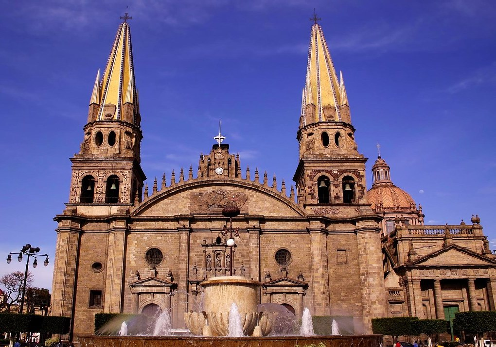

- 
La Minerva es un monumento representativo de la ciudad de Guadalajara, en el estado de Jalisco, México. La fuente está adornada con una estatua de la diosa romana Minerva, obra del escultor Joaquín Arias.
Tlaquepaque es una de las ciudades mexicanas con mayor tradición artesanal, pero sobre todo un lugar donde los secretos de las técnicas artesanales en cerámica y alfarería se amalgaman en hermosas y novedosas piezas artesanales decorativas dignas de admirarse.
El Centro de Guadalajara es la parte originaria de dicha ciudad, el cual se compone de edificaciones, monumentos, plazas y parques construidos a lo largo de sus más de cuatro siglos de historia.